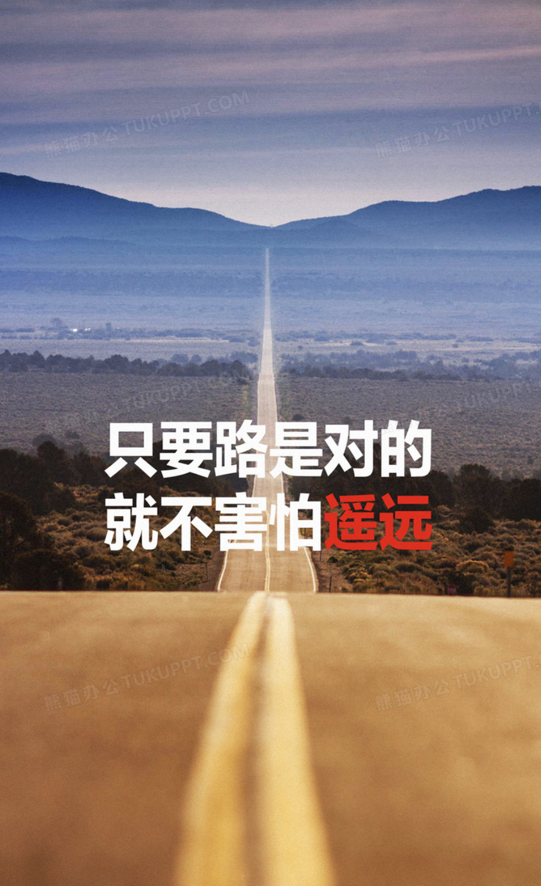

姓名：GA
性别：男
爱好：听歌，写编程，体验生活
性格：有时开朗，有时冷漠
家乡：河南-桐柏
专业：计算机

一、在这个诺大的城市，不知道怎么的有时候我喜欢一个人，去一个地方独自带上一会，享受独处的时光。
二、我相信未来的某一天，会感谢现在努力学习的你！因为努力从不是一天就可以完成的，相信自己！加油！
三、总会有一件事让你瞬间长大，也总会有一个人让你泪如雨下。愿你早日领教这个世界的深深恶意，让自己活得开心得意。
四、岁月从来不曾静好，只是有人在替你背负枷锁，含泪前行。也许是父母，也许是朋友，也许是陌生人……无论是谁，请记得常怀感恩之心。